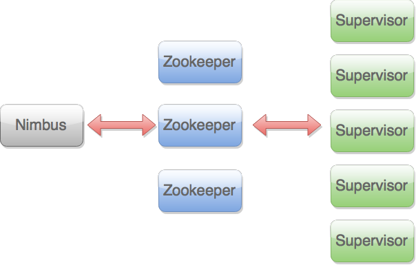
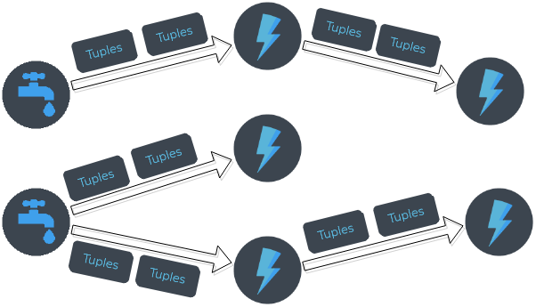

IME-USP
is a free and open source distributed realtime computation system. Storm makes it easy to reliably process unbounded streams of data, doing for realtime processing what Hadoop did for batch processing. Storm is simple, can be used with any programming language, and is a lot of fun to use!

Spouts
Bolts
Tuples

public static class TestWordSpout extends BaseRichSpout {
...
public void nextTuple() {
Utils.sleep(100);
final String[] words = new String[] {"nathan", "mike", "jackson"};
final Random rand = new Random();
final String word = words[rand.nextInt(words.length)];
_collector.emit(new Values(word));
}
}
public static class ExclamationBolt implements IRichBolt {
...
public void execute(Tuple tuple) {
_collector.emit(tuple, new Values(tuple.getString(0) + "!!!"));
_collector.ack(tuple);
}
}
TopologyBuilder builder = new TopologyBuilder();
builder.setSpout("words", new TestWordSpout(), 10);
builder.setBolt("exclaim1", new ExclamationBolt(), 3)
.shuffleGrouping("words");
builder.setBolt("exclaim2", new ExclamationBolt(), 2)
.shuffleGrouping("exclaim1");
TopologyBuilder builder = new TopologyBuilder();
builder.setSpout("sentences", new KestrelSpout("kestrel.backtype.com",
22133,
"sentence_queue",
new StringScheme()));
builder.setBolt("split", new SplitSentence(), 10)
.shuffleGrouping("sentences");
builder.setBolt("count", new WordCount(), 20)
.fieldsGrouping("split", new Fields("word"));
public static class SplitSentence extends ShellBolt implements IRichBolt {
public SplitSentence() {
super("python", "splitsentence.py");
}
public void declareOutputFields(OutputFieldsDeclarer declarer) {
declarer.declare(new Fields("word"));
}
}
import storm
class SplitSentenceBolt(storm.BasicBolt):
def process(self, tup):
words = tup.values[0].split(" ")
for word in words:
storm.emit([word])
SplitSentenceBolt().run()